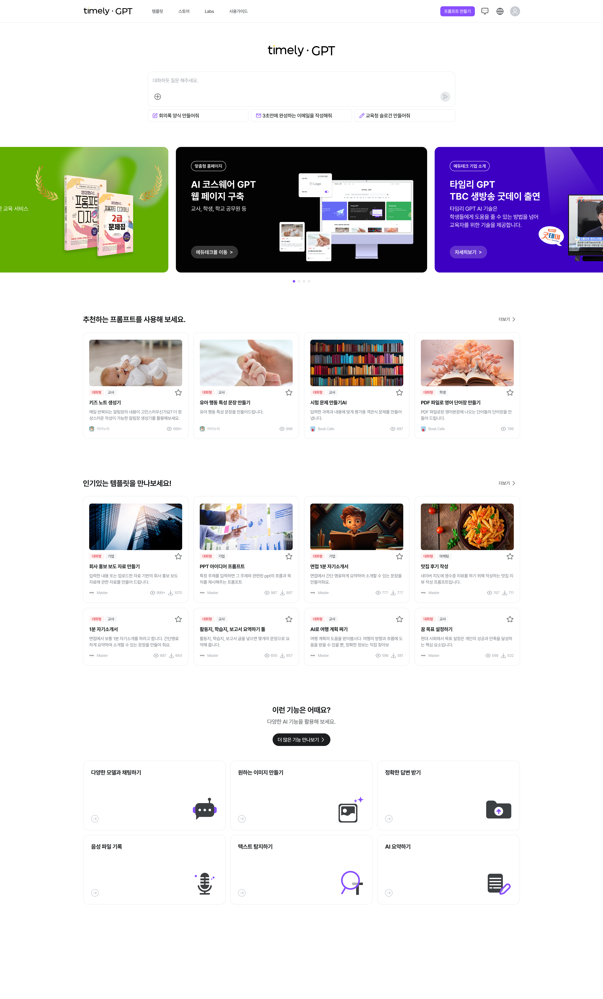
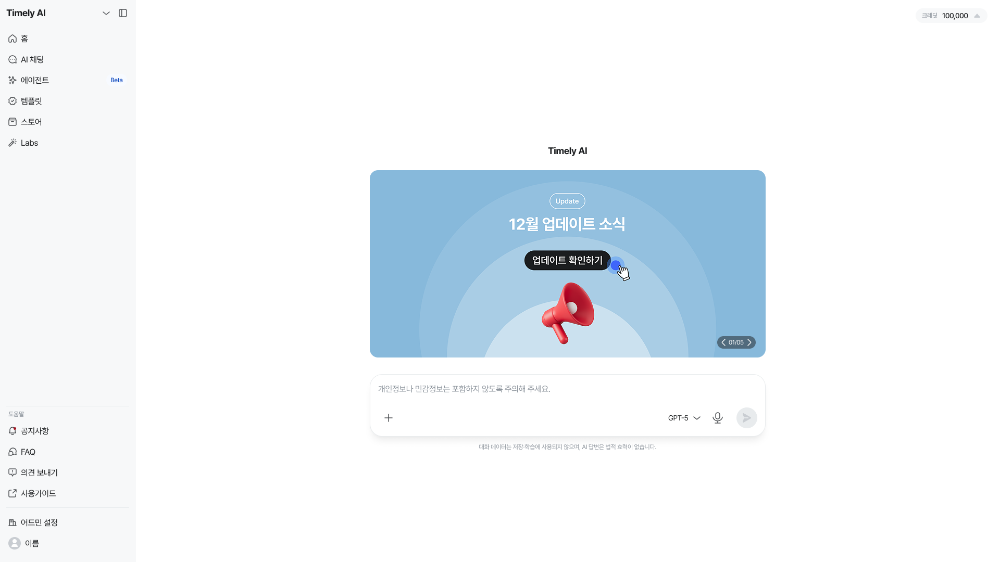
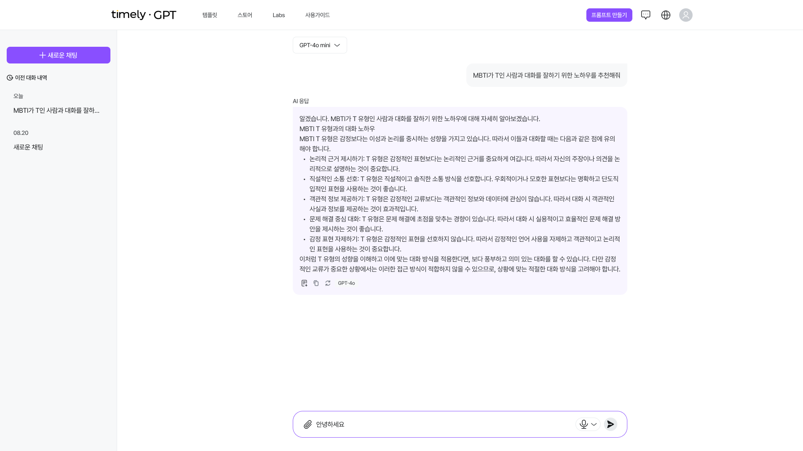
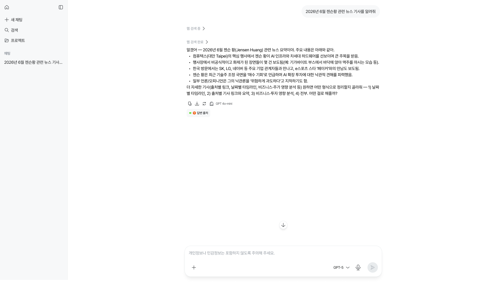

Case · Timely AI
배너와 콘텐츠로 채워져 있던 홈 화면을, 사용자가 곧바로 작업을 시작하는 화면으로 재설계했습니다.
Context
타임리AI는 프롬프트, 이미지·영상 생성, 문서 변환 같은 업무용 AI 기능을 하나의 플랫폼에서 제공합니다. 서울특별시, 한국석유공사, 경기도서관, 대구공공시설관리공단 등 전국 지자체·공공기관·대학에 도입되어 운영되고 있습니다.
Problem
사용자는 이미 대화형 AI의 사용 관습을 익힌 상태로 들어옵니다. 화면을 열면 입력창이 있고 거기서 대화가 시작된다는 기대를 가지고요.
기존 홈에도 입력창은 상단에 있었습니다. 문제는 위치가 아니라 무게였습니다. 그 아래로 배너 캐러셀, 추천 프롬프트, 인기 템플릿, 기능 소개가 이어졌고, 화면에서 가장 크고 눈에 띄는 것은 배너였습니다.
게다가 서비스가 자리를 잡으면서 이미 사용법을 아는 사용자의 비중이 늘었습니다. 이들에게 배너는 매번 지나쳐야 하는 소음이었고, 다른 대화형 AI 서비스와 다른 이 구조 자체에 반감을 표하는 반응이 나오기 시작했습니다.
한 화면에서 사용을 위한 영역은 하나, 나머지는 전부 소개를 위한 영역이었습니다.
소개 콘텐츠를 삭제한 것이 아니라, 찾아갈 수 있는 곳으로 옮겼습니다.
Diagnosis
처음 온 사람을 설득하는 랜딩, 그리고 매일 오는 사람의 작업 시작점. 방문의 대부분은 후자인데, 화면은 전자에 맞춰져 있었습니다.
두 역할을 한 화면에서 모두 잘 해내는 방법을 찾기보다, 홈의 역할을 하나로 정하고 나머지를 다른 자리로 옮기는 쪽을 택했습니다.
Decisions
01
배너 캐러셀, 추천 프롬프트, 인기 템플릿, 기능 소개를 홈에서 걷어냈습니다. 다만 삭제가 아니라 이동입니다. 템플릿·스토어·Labs는 사이드바 항목으로 재배치해 필요할 때 찾아갈 수 있는 구조로 바꿨습니다. 업데이트 소식만 단일 배너로 남겨, 공지가 필요한 순간의 창구를 유지했습니다.


02
기존의 가로 GNB는 항목이 늘어날수록 감당하기 어려운 구조였습니다. 에이전트처럼 새 기능이 계속 붙는 제품에서는, 기능이 추가돼도 정보구조를 다시 짜지 않아도 되는 형태가 필요했습니다. 세로 사이드바는 항목 수의 증가를 견디고, 홈에서 걷어낸 소개 콘텐츠를 받아줄 자리이기도 했습니다.
03
기존에는 모델 선택기가 화면 상단에 단독으로 떠 있어, "지금 무엇을 고르는 중인가"가 입력 행위와 분리되어 있었습니다. 선택기를 입력창 안으로 옮겨 모델 선택이 발화의 일부가 되도록 했습니다. 무엇으로 답하게 할지를 쓰기 직전에 결정하는 것이, 여러 모델을 오가는 제품의 실제 사용 방식에 가까웠습니다.


04
배너를 걷어낸 자리를 그대로 여백으로 두지 않았습니다. 입력창 안내 문구를 데이터 취급에 대한 주의로 바꾸고, 입력창 아래에 대화 데이터의 저장·학습 여부와 답변의 법적 효력에 관한 고지를 배치했습니다.
공공기관과 지자체가 쓰는 서비스에서 이 정보는 부가 설명이 아니라 사용을 시작하기 전에 확인되어야 하는 조건입니다. 홈을 비운 것이 아니라, 홈이 해야 할 말을 바꾼 것에 가깝습니다.
Principle
공간을 비우는 일은 무엇을 지울지가 아니라, 그 자리에 무엇이 와야 하는지를 정하는 일이었습니다.
가장 눈에 띄던 배너가 있던 자리에, 가장 먼저 읽혀야 할 문장을 놓았습니다.
Outcome
첫 화면의 목적이 하나가 됐습니다. 사용자가 도착해서 처음 하는 행동과 화면이 유도하는 행동이 일치하게 됐습니다.
기능 확장을 견디는 내비게이션을 갖췄습니다. 이후 추가된 기능들은 정보구조 변경 없이 사이드바에 편입되었습니다.
공공 도입 환경에 필요한 고지를 첫 화면에 확보했습니다. 별도 안내 페이지를 만들지 않고 사용 시작 지점에서 전달됩니다.
이 개편에서 가장 오래 붙잡았던 질문은 "무엇을 뺄까"가 아니라 "이 화면은 누구의 화면인가"였습니다. 홈에 놓인 것들은 모두 누군가에게 필요한 콘텐츠였고, 그래서 지우는 판단이 쉽지 않았습니다.
기준이 된 것은 방문의 대부분을 차지하는 사용자였습니다. 한 화면이 모두를 만족시키려 할 때 실제로는 아무도 만족시키지 못한다는 것을, 이 작업을 통해 확인했습니다.